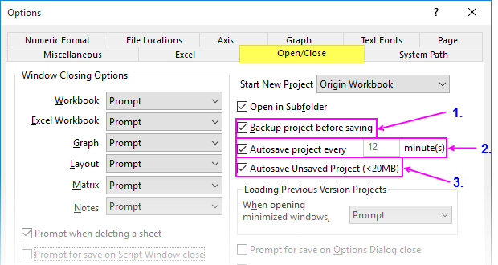
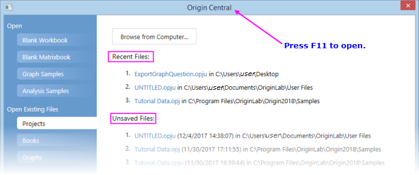
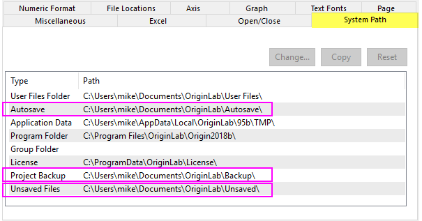
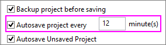
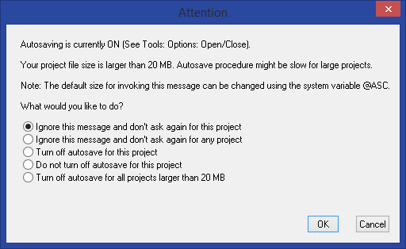
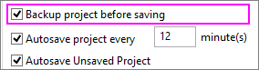

Origin-Projektdatei öffnen, schließen und durch Backup sichern
OPJ-Open-Close-Backup
Projektdatei öffnen
- Wählen Sie im Origin-Menü Datei: Öffnen. Stellen Sie sicher, dass für den Dateityp die Option Origin-Dateien (*.opju, *.opj, .og?, *.ot?) gewählt ist. Wählen Sie die Projektdatei und klicken Sie auf Öffnen. Dies schließt alles im aktuellen Arbeitsbereich, und die ausgewählte .OPJ-Datei wird geladen. Wenn Änderungen an dem aktuellen Projekt nicht gespeichert wurden, wird Origin Sie auffordern, Ihre Arbeit zu speichern.
- Wählen Sie im Menü Datei: Anhängen. Sie können mehrere Projektdateien auswählen. Die ausgewählten Projektdateien werden zum aktuellen Arbeitsbereich hinzugefügt. Sie werden gefragt, ob Sie sie (a) als Unterordner in den aktuellen Ordner des Projekt Explorers oder (b) direkt in den aktuellen Ordner einfügen möchten. Hinweis: Jeder Unterfenstername innerhalb eines Projekts muss eindeutig sein. Deshalb kann es passieren, dass Unterfenster in angehängten OPJs durch Nummerierung umbenannt werden.
- Ziehen Sie eine Projektdatei per Drag&Drop aus dem Windows Explorer in den Origin-Arbeitsbereich. Wenn der Arbeitsbereich standardmäßig der Arbeitsbereich Untitled ist, ist dies das Äquivalent zu Datei: Öffnen. Wenn eine benannte Projektdatei im aktuellen Arbeitsbereich geöffnet ist, wird die per Maus gezogene Projektdatei an den existierenden Arbeitsbereich angehängt und Sie werden aufgefordert, (a) einen neuen Ordner zu erstellen oder (b) sie zum aktuellen Ordner hinzuzufügen.
- Durch einen Doppelklick auf eine Projektdatei im Windows Explorer wird eine neue Instanz von Origin mit der geladenen Projektdatei gestartet.
Um eine Projektdatei zu speichern:
- Wählen Sie Datei: Projekt speichern oder klicken Sie auf Projekt speichern
 auf der Symbolleiste Standard. Dies speichert alles im aktuellen Origin-Arbeitsbereich unter dem Dateinamen, der in der Titelleiste des Origin-Arbeitsbereich gezeigt wird. Hinweis: Der Ordner des Projekt Explorers, der beim Speichern der OPJ-Datei aktiv ist, ist der Ordner, der beim erneuten Öffnen der OPJ-Datei geöffnet wird.
auf der Symbolleiste Standard. Dies speichert alles im aktuellen Origin-Arbeitsbereich unter dem Dateinamen, der in der Titelleiste des Origin-Arbeitsbereich gezeigt wird. Hinweis: Der Ordner des Projekt Explorers, der beim Speichern der OPJ-Datei aktiv ist, ist der Ordner, der beim erneuten Öffnen der OPJ-Datei geöffnet wird.
- Wählen Sie Datei: Projekt speichern unter... und legen Sie einen Pfad, einen Dateinamen und unter Dateityp *opju oder *.opj fest.
- Klicken Sie mit der rechten Maustaste auf einen Ordner oder einen Unterordner im Projekt Explorer, um nur diesen Ordner und seine Unterordner in einer separaten Projektdatei zu speichern.
 | Sie können Origin konfigurieren, um eine benutzerdefinierte Projektdatei beim Start zu öffnen. Wählen Sie Hilfsmittel: Optionen, klicken Sie auf die Registerkarte Öffnen/Schließen und setzen Sie Neues Projekt öffnen auf Origin.opj. Klicken Sie bei der Befehlsaufforderung auf "Ja". Speichern Sie dann Ihr benutzerdefiniertes Projekt im Hauptordner Ihres Anwenderdateiordners und verwenden Sie dafür den Namen Origin.opj. Jedes Mal, wenn Sie Origin ausführen, wird Ihr benutzerdefiniertes Projekt automatisch geladen. |
| Origin 2018 enthält neue Dateiformate für Projekte, Unterfensterdateien und Vorlagen. Wenn Sie eine Datei speichern, haben Sie die Option, eine Datei mit oder ohne ein am Dateityp angehängtes "u" zu speichern (*.opj oder *.opju).
- Wenn Sie beabsichtigen, die Datei nur in der neuesten Version von Origin zu verwenden, sollten Sie den neuen OPJU-Dateityp verwenden, da er einige Vorteile hinsichtlich der Performance zeigt.
- Wenn Sie das Projekt mit Kollegen teilen möchten, die ältere Versionen von Origin verwenden, sollten Sie das Projekt in dem älteren OPJ-Dateityp speichern.
- Wenn Sie möchten, dass Origin standardmäßig im älteren OPJ-Format (und/oder im Diagrammfensterformat OGG) speichert, öffnen Sie das Skriptfenster (Fenster: Skriptfenster) und ändern Sie den Wert der "@"-Systemvariable @OPJ.
|
Was wird (nicht) mit der Origin-Projektdatei gespeichert?
Projektsicherung und -wiederherstellung
Origin hat drei unterschiedliche Funktionen zur Datenwiederherstellung, die über Hilfsmittel: Optionen aktiviert bzw. deaktiviert werden können:
- 
- Das Backup ist die älteste Origin-Wiederherstellungsfunktion und kann nützlich sein, wenn Sie eine Projektdatei haben, die sich nicht öffnen lässt. Diese Datei sollte den Projektinhalt zum Zeitpunkt der zuletzt erfolgreich gespeicherten Datei enthalten.
- Die automatische Speicherung ist nützlich zum Wiederherstellen nach Programmabstürzen und Stromausfällen. Wie der Name andeutet, wird die Datei automatisch in einem vordefinierten Intervall gespeichert.
- Ungespeichert ist nützlich zum Wiederherstellen von Daten, die Sie beim Schließen der Datei oder des Programm nicht gespeichert haben (sowohl Untitled und Dateien mit Namen).
Neue Projekte
Wenn Sie Origin starten, wird der Origin-Fenstertitel standardmäßig mit UNTITLED-/Folder1 angezeigt, um darauf hinzuweisen, dass es sich um ein leeres neues Projekt handelt, und Ihr aktueller Projektordner Folder1 ist. Diese Datei behält den Namen UNTITLED, bis Sie im Menü Datei: Projekt speichern oder Datei: Projekt speichern unter wählen. In beiden Fällen öffnet sich beim Speichern von UNTITLED der Dialog Speichern unter, in dem Sie einen Pfad wählen können, einen Dateinamen und einen Dateityp.
Ungespeicherte Projekte automatisch speichern
Wenn Sie Änderungen an einem geöffneten Projekt vornehmen - egal, ob es ein Projekt mit Name (gespeichert) oder UNTITLED ist -- wird ein Sternchen ("*") neben dem Dateinamen in der Titelleiste von Origin angezeigt.
Sobald eine Datei modifiziert wurde, veranlasst der Versuch, die Datei zu schließen oder Origin zu verlassen, bevor Sie Datei: Projekt speichern oder Datei: Projekt speichern unter gewählt haben, die Anzeige einer Befehlsaufforderung, die Änderungen am Projekt zu speichern.
Ab Origin 2018 wird die Projektdatei automatisch vor dem Schließen gespeichert, wenn Sie NEIN angeben UND Ungespeicherte Projekte automatisch speichern aktiviert ist (Standard):

- Wenn der Name des Projekts noch UNTITLED ist, wird der modifizierte Inhalt unter C:\Users\User\Documents\OriginLab\Unsaved\UNTITLED gespeichert.
- Wenn das Projekt bereits einen Namen hat, wird der modifizierte Inhalt unter C:\Users\User\Documents\OriginLab\Unsaved\Projektname gespeichert.
Inhalt eines ungespeicherten Projekts wiederherstellen:
- 
- Starten Sie Origin. Wenn der Origin-Navigator nicht geöffnet wird, drücken Sie die Taste F11.
- Wechseln Sie zur Registerkarte Projekte.
- Durchsuchen Sie die Liste der Ungespeicherten Dateien nach Ihrer ungespeicherten Datei.
| Die andere Möglichkeit, Ordner zu finden, die mit der Datenwiederherstellung verbunden sind, besteht darin, Hilfsmittel: Optionen zu wählen und auf die Registerkarte Systempfad zu klicken. Hier finden Sie die Pfade für automatisch gespeicherte, Backup- und ungespeicherte Dateien. 
|
Hinweise zu ungespeicherten Projekten
- Die maximale Größe für ungespeicherte Dateien wird von der LabTalk-Systemvariable @USM gesteuert. Der Standard für @USM ist 20 MB; ungespeicherte Dateien, die größer sind als 20 MB werden nicht automatisch gespeichert. Anstatt die maximale Größe von ungespeicherten Dateien zu erhöhen, werden Nutzer bestärkt, neue Projektinhalte ohne Verzögerung in einer Datei mit Namen zu speichern.
- Es kann nur eine Datei mit dem Namen UNTITLED geben. Wenn Sie den Inhalt von UNTITLED speichern möchten, sollten Sie die Datei öffnen und unter einem sinnvollen Namen speichern. Während jegliche folgende Änderungen an UNTITLED automatisch gespeichert werden, wird UNTITLED überschrieben, wenn Sie ein weiteres unbenanntes Projekt öffnen und UNTITLED nicht beim Schließen speichern.
- Standard ist, dass Projekte 7 Tage aufbewahrt werden. Das Einhalten der Zeit wird von der LabTalk-Systemvariable @USKT gesteuert.
Projekt automatisch alle xx Minute(n) speichern
- 
Origin verfügt über eine Funktion Projekt alle xx Minuten automatisch speichern, die standardmäßig eingeschaltet ist. Sobald Sie Ihrer Projektdatei verändert haben, werden die Projektinhalte von dieser Funktion regelmäßig in einer temporären Datei im Unterordner \Documents\OriginLab\Autosave gespeichert. An die Datei wird der Name Ihrer Projektdatei mit einer angehängten "-Nummer" vergeben.
Sollte ein Programmabsturz oder Stromausfall auftreten, können Sie einen Großteil Ihrer Arbeit wiederherstellen, indem Sie zu dieser temporären Datei navigieren und sie öffnen. Wenn Sie das Origin-Projekt speichern oder das Programm normal beenden, wird die temporäre Datei gelöscht.
Damit die Funktion Automatisch speichern verwendet werden kann:
- Sie müssen das Projekt einmal gespeichert haben, d.h., wenn Sie ein neues Projekt öffnen, müssen Sie einen Namen vergeben haben.
- Sobald Sie ein Projekt speichern, muss das Projekt seit seinem letzten Speichern oder Öffnen verändert werden, da sonst keine temporäre Datei gespeichert wird.
- Navigieren Sie zum Ordner Autosave, indem Sie eine der folgenden Optionen wählen:
- Wählen Sie Hilfe: Ordner öffnen: Anwenderdateiordner im Menü, um den Ordner zu öffnen.
- Öffnen Sie Hilfsmittel: Optionen. Die Registerkarte Systempfad führt alle Pfade auf, die von Origin erstellt wurden, einschließlich Autosave (Beachten Sie, dass Sie auf dieser Registerkarte den Speicherort Ihres Autosave-Ordners ändern können, indem Sie Autosave markieren und auf die Schaltfläche Ändern klicken).
- Öffnen Sie mit einem (a) Doppelklick auf das Projektsymbol im Windows-Dateiexplorer, durch (b) Verwenden von Origins Menü Datei: Öffnen oder durch (c) Drag&Drop die Datei in Ihrem Origin-Arbeitsbereich.
Einstellungen der automatischen Speicherung festlegen
Um die Funktion zu aktivieren, deaktivieren oder die Zeitabstände des automatischen Speicherns anzupassen:
- Wählen Sie im Menü Hilfsmittel: Optionen, um den Dialog Optionen zu öffnen.
- Gehen Sie zur Registerkarte Öffnen/Schließen und aktivieren bzw. deaktivieren Sie das Kontrollkästchen Automatisches Speichern des Projekts alle x Minute(n). Passen Sie die Speicherfrequenz nach Bedarf an.
Hinweise zu automatisch gespeicherten Projekten
- Es gibt eine Schwellenwertprojektgröße - Standard sind 20MB und wird von der "@"-Systemvariablen @ASC gesteuert -, die den folgenden Warndialog aufruft, wenn das Projekt gespeichert bzw. automatisch gespeichert wird:
- 
Da das automatische Speichern von Dateien Ihre Arbeit verlangsamen kann, können Sie über diesen Dialog die automatische Speicherung für das aktuelle Projekt oder für jedes Projekt, das den Schwellenwert überschreitet, ausschalten.
Tun Sie nur nach sorgfältiger Überlegung.
- Sie werden außerdem sehen, dass es Optionen gibt, um den Warndialog zu deaktivieren ("Fragen Sie nicht wieder..."). Um den Warndialog wiederherzustellen, nachdem er ausgeschaltet wurde, öffnen Sie das Skriptfenster (Fenster: Skriptfenster), geben Sie folgenden Befehl ein und drücken Sie <Enter>:
doc -ca
Beim nächsten Speichern einer großen OPJ-Datei wird dieser Warndialog geöffnet, wenn die Schwellenwertgröße von @ASC überschritten wurde (siehe den Befehl doc -ca).
- Die Zeitdauer, die ein automatisch gespeichertes (abgestürztes) Projekt aufbewahrt wird, wird von der "@"-Systemvariable @ASKH gesteuert. Der Standard ist "Aufbewahrungsstunden" = 12, aber Sie können diesen Wert im Skriptfenster (Fenster: Skriptfenster) ändern. Wenn Sie Dateien nicht automatisch aus dem Ordner Autosave entfernen möchten, setzen Sie @ASKH = -1.
Vor dem Speichern Sicherungskopie erstellen
- 
Wenn Sie manuell eine Origin-Projektdatei mit Namen speichern möchten, wird eine Kopie der Datei, wie sie zum Zeitpunkt der letzten Speicherung bestand, im Ordner Projektsicherungsordner gespeichert. Wenn Ihre modifizierte Datei aus irgendeinem Grund beschädigt werden sollte, sollte es möglich sein, die vorherige Version der Datei wiederherzustellen, indem Sie die Datei im Backup-Ordner öffnen. Diese Funktion ist standardmäßig aktiviert und unabhängig von den Funktionen "Automatische Speicherung" und "Ungespeichert".
| Hinweis: Der Sicherungsordner ist in Origin 2018b eingeführt. Bei älteren Versionen sichert Origin die vorherige Version der aktuellen Projektdatei durch Speichern einer BACKUP.OPJ(U)-Datei in Ihrem Anwenderdateiordner (UFF). Es gibt nur eine Datei BACKUP.OPJ(U). Wenn Sie also später eine andere OPJ(U)-Datei erneut öffnen und die OPJ(U) manuell gespeichert haben, ist BACKUP.OPJ(U) die neue Backup-Datei.
|
Um die Sicherungskopie der Projektdatei zu öffnen:
- Starten Sie Origin.
- Wählen Sie Hilfe: Ordner öffnen: Projektsicherungsordner
oder
öffnen Sie den Dialog Hilfsmittel: Optionen, um den Sicherungspfad auf der Registerkarte Systempfad zu kopieren und ihn in der Adressleiste des Windows-Dateiexplorers einzufügen.
- Suchen Sie die Projektdatei und öffnen Sie sie.
Um die Erstellung der Datei BACKUP.opj zu deaktivieren:
- Wählen Sie im Menü Hilfsmittel: Optionen, um den Dialog Optionen zu öffnen.
- Gehen Sie zur Registerkarte Öffnen/Schließen und deaktivieren Sie das Kontrollkästchen Backup vor dem Speichern.
Hinweise zu Backup-Projekten
- Ab 2018b lässt Origin das Speichern von mehreren Sicherungsdateien zu, eine für jedes Projekt mit Namen. Diese Dateien werden über die Zeit gesammelt und benötigen beträchtliche Speicherkapazitäten. Standardmäßig zeigt Origin eine regelmäßige Erinnerungsmeldung zu den anwachsenden Sicherungsdateien an. Diese Meldung wird über die "@"-Systemvariable @BFS gesteuert.